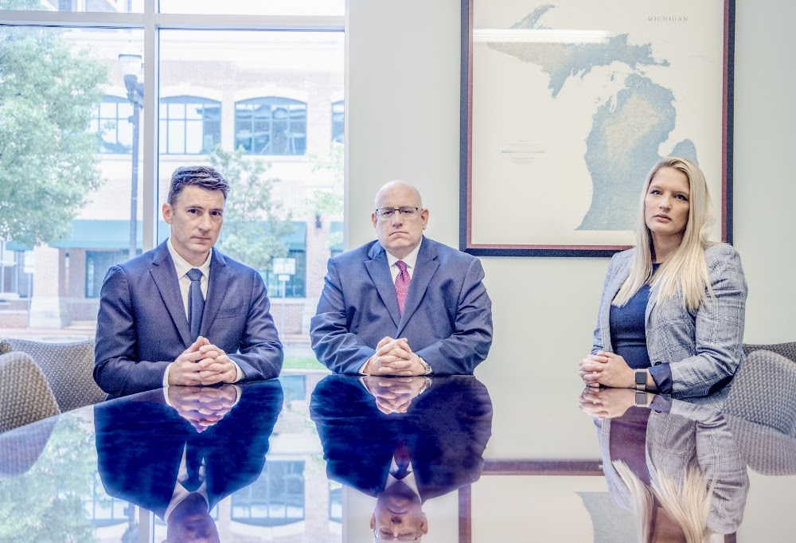

Wreck Survivors Need Clear Rights
After a serious roadway incident, people often face unfamiliar choices involving insurance notices, workplace disruption, transportation, and personal privacy. A timely discussion with car accident attorneys michigan can explain which communications deserve a response and which should be reviewed before anything is signed. Independent guidance from car accident attorneys michigan may also help a person understand possible forms of compensation without making promises about an outcome. The goal is to replace pressure and confusion with a measured plan that reflects the individual's circumstances.
People are entitled to make informed decisions about medical care, employment arrangements, and contact with insurers. They can request understandable explanations, ask who is authorized to speak on their behalf, and seek reasonable time to consider a release. car accident attorneys michigan can help evaluate whether proposed language is limited and consistent with the person's goals, while car accident attorneys michigan may assist when another party's conduct or an insurer's position creates uncertainty. Maintaining privacy and avoiding public speculation can protect the process as questions are resolved.
People should not have to choose between immediate stability and careful decision-making. A trusted representative can explain how a proposed settlement may affect future claims, public benefits, liens, or tax concerns, and can identify questions that deserve outside review. car accident attorneys michigan may help coordinate that review and communicate with other parties so important choices are made deliberately rather than under pressure. The appropriate course depends on the injuries, policies, deadlines, and facts of the individual matter, so general information should not replace advice tailored to the situation.

Medical Records Strengthen Injury Cases
Clinical records document more than a diagnosis. They may show how symptoms were first reported, what examinations found, why referrals were made, and how treatment changed over time. car accident attorneys michigan can examine whether the sequence is complete, while car accident attorneys michigan may help identify questions for treating providers about restrictions, expected recovery, or the need for further evaluation.
Details that appear minor can become meaningful when they recur across multiple entries. Descriptions of sleep, mobility, concentration, medication effects, and tolerance for routine tasks may clarify how a condition affects daily function. car accident attorneys michigan may compare those entries with imaging and specialist assessments, and car accident attorneys michigan can help distinguish a documented clinical finding from an assumption that has not been confirmed by a provider.
Accuracy should remain the priority when records are collected and reviewed. Patients can check dates, provider names, medication lists, and stated medical history, then ask the relevant office to address factual errors through its standard correction process. car accident attorneys michigan may use the assembled documentation to present a focused account of treatment, limitations, and anticipated care without adding conclusions that the documentation does not support.
Lost Wages Require Careful Calculation
When an injury interrupts a person's ability to work, the financial impact may involve more than regular hourly pay. A useful review can consider salary, overtime, commissions, tips, paid leave, bonuses, and employer-provided benefits, while distinguishing amounts actually received from amounts that became unavailable. A review by car accident attorneys michigan can help identify the employment records that matter, and guidance from car accident attorneys michigan may assist in arranging pay statements, attendance data, and employer correspondence into a consistent timeline.
Different work arrangements call for different forms of support. An hourly employee may rely on schedules and timekeeping entries, while a salaried worker may need records showing leave usage, altered duties, or postponed advancement. A contractor or business owner may instead need invoices, service agreements, account statements, and seasonal comparisons to show how the interruption affected expected revenue. car accident attorneys michigan can assess whether the available material supports the stated figure, while car accident attorneys michigan may help explain discrepancies without inflating the claimed impact.
Clarity also matters when a claim reviewer questions the connection between an incident and a reduction in earnings. The file should identify the affected period, explain the basis for the requested amount, note payments received from other sources, and describe reasonable efforts to return to work within existing limitations. car accident attorneys michigan may help prepare a focused presentation that separates documented past effects from projections about future earning capacity and makes each supporting record easy to verify.
Shibley Law
Shibley Law
380 W Western Ave Ste 120, Muskegon, MI 49440, United States
(231) 725-8444